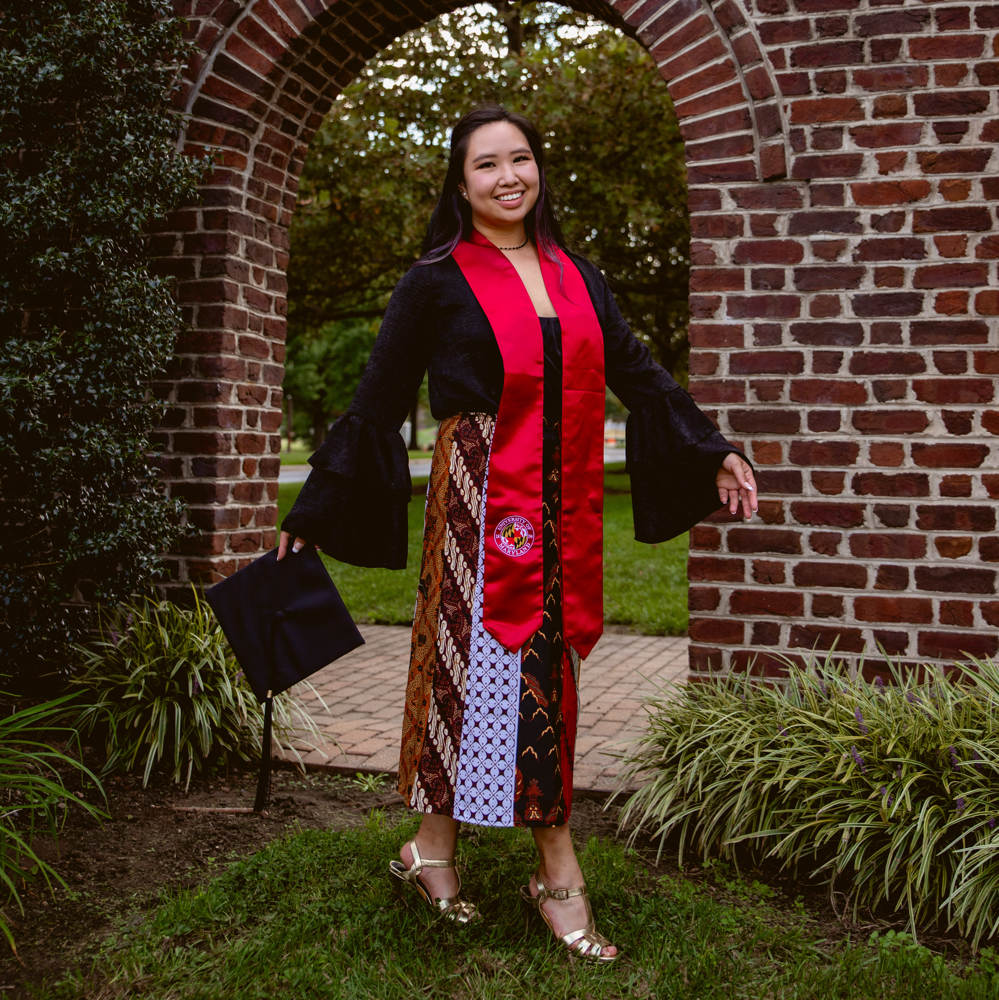

AUDREY NIKA WIDODO
Growing up in Indonesia, I am a traveler at heart and a writer at best.
As a journalist, I am dedicated to the truth, passionate about the cause, and ready for the next challenge.
Video Production Intern
Persistent Productions
July 2020 - September 2020
As an intern, I was able to help create graphics for a Women's in Business series that highlights how small business owners are doing admist
the pandemic. I also reviewed transcriptions of video interviews for a Mural Project based in Gloucester, MA. I was able to create a personal portfolio
project that highlights the importance of voting and the title of the short film is 'Boats to Ballots' and it is set in Washington D.C.
President, Editor-in-Chief, Senior Editor & Writer
Her Campus Maryland
September 2017 - May 2020
I would write articles every month for the publication and as an editor I would review profile articles. As President and Editor-in-Chief, I held weekly meetings for writers to pitch ideas. I reviewed and published
articles onto the website and I was able to raise the chapter from a Bronze to Gold chapter status.
Broadcast News Reporter Intern
Laurel TV
February 2019 - May 2019
I covered and reported on local stories in the Laurel, MD area. I created news packages and assisted a production crew in the studio for the local shows.
English to Asia Newsroom Intern
Voice of America
May 2018 - December 2018
I created online video and audio content for Facebook LIVE and VOA's game room radio broadcast. I covered events in D.C. and worked with college radio stations in Indonesia to broadcast VOA programs through newsharing website.